Exploratory data analysis
R for Data Science by Wickham & Grolemund
데이터 분석의 과정

source: R for Data Science
- Transform (데이터 변형)
- 데이터의 변수들 중 일부를 선택하기
- 필요한 부분를 필터링하기
- 기존의 변수들로 새로운 변수 만들기
- 요약자료를 계산하기
- Visualise (시각화)
- 시각화를 통해 데이터가 품고 있는 정보를 파악하여 데이터에 대한 이해를 높임
- Model (모형)
- 시각화와 데이터 변형의 두 가지를 병행하면서 호기심과 의구심을 갖고 연구자가 자신의 관심사에 답을 구하는 탐색적 분석을 하는 과정
- 이 과정에서 모형을 세우고 데이터를 얼마나 잘 설명하는지를 살펴보고, 모형을 수정해 나가는 과정을 거침
First steps
Load packages
# numerical calculation & data frames
import numpy as np
import pandas as pd
# visualization
import matplotlib.pyplot as plt
import seaborn as sns
import seaborn.objects as so
import plotly.express as px
# statistics
import statsmodels.api as smData: Fuel economy data from 1999 to 2008 for 38 popular models of cars
description
# Fuel economy data from 1999 to 2008 for 38 popular models of cars
mpg = sm.datasets.get_rdataset("mpg", "ggplot2").data
mpg| manufacturer | model | displ | year | cyl | trans | drv | cty | hwy | fl | class | |
|---|---|---|---|---|---|---|---|---|---|---|---|
| 0 | audi | a4 | 1.8 | 1999 | 4 | auto(l5) | f | 18 | 29 | p | compact |
| 1 | audi | a4 | 1.8 | 1999 | 4 | manual(m5) | f | 21 | 29 | p | compact |
| 2 | audi | a4 | 2.0 | 2008 | 4 | manual(m6) | f | 20 | 31 | p | compact |
| 3 | audi | a4 | 2.0 | 2008 | 4 | auto(av) | f | 21 | 30 | p | compact |
| 4 | audi | a4 | 2.8 | 1999 | 6 | auto(l5) | f | 16 | 26 | p | compact |
| ... | ... | ... | ... | ... | ... | ... | ... | ... | ... | ... | ... |
| 229 | volkswagen | passat | 2.0 | 2008 | 4 | auto(s6) | f | 19 | 28 | p | midsize |
| 230 | volkswagen | passat | 2.0 | 2008 | 4 | manual(m6) | f | 21 | 29 | p | midsize |
| 231 | volkswagen | passat | 2.8 | 1999 | 6 | auto(l5) | f | 16 | 26 | p | midsize |
| 232 | volkswagen | passat | 2.8 | 1999 | 6 | manual(m5) | f | 18 | 26 | p | midsize |
| 233 | volkswagen | passat | 3.6 | 2008 | 6 | auto(s6) | f | 17 | 26 | p | midsize |
234 rows × 11 columns
Q: 엔진의 크기(displ)와 연비(hwy)는 어떤 관계에 있는가?
(
so.Plot(mpg, x="displ", y="hwy") # empty plot을 생성하고, x, y축에 mapping할 mpg 데이터의 변수를 지정
.add(so.Dot()) # layer를 추가하여, points들을 Dot이라는 mark object를 써서 표현
)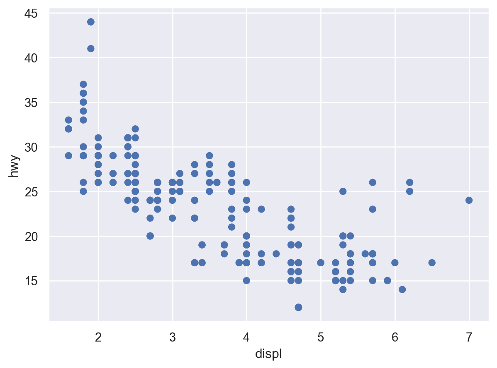
Important
Layer-specific mappings
다음과 같이 첫번째 layer 안에서 x, y를 mapping하는 경우, 이후 새로 추가되는 layer에는 그 mapping이 적용되지 않음
(
so.Plot(mpg)
.add(so.Dot(), x="displ", y="hwy") # 이 layer에서만 mapping이 유효
)
Tip
다음과 같이 x, y를 생략하거나 간략히 할 수 있으나…
so.Plot(mpg, "displ", "hwy").add(so.Dot())카테고리 변수인 경우
- cyl (실린더 개수), hwy (고속도로 연비)의 관계를 scatterplot으로 살펴볼 수 있는가? (left)
- class (차량 타입), drv (전륜 구동, 후륜 구동, 4륜 구동 타입)의 관계는 어떠한가? (right)
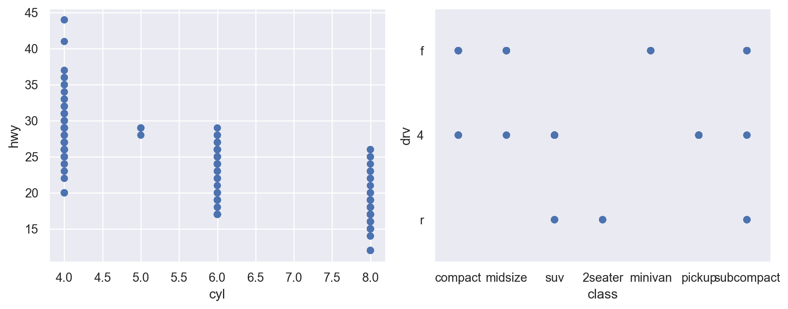
Aesthetic mappings
Q: 엔진의 크기와 연비와의 관계에서 보이는 트렌드 라인에서 심하게 벗어난 것이 있는가?
변수들을 x, y라는 position에 mapping하는 것에 추가하여 다음과 같은 속성(aesthetic)에 mapping할 수 있음
색(color), 크기(pointsize), 모양(marker), 선 종류(linestyle), 투명도(alpha)

Color
(
so.Plot(mpg, x="displ", y="hwy", color="class")
.add(so.Dot())
)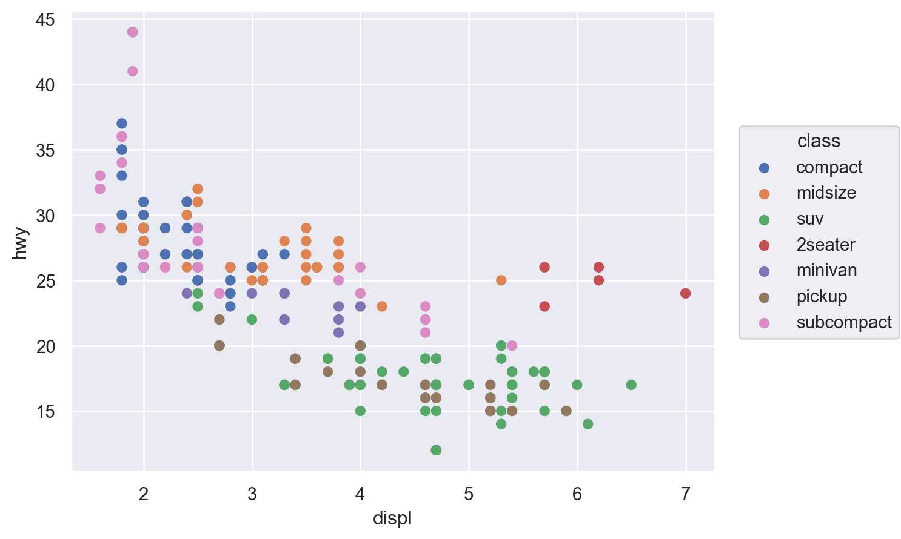
Pointsize
(
so.Plot(mpg, x="displ", y="hwy", pointsize="class")
.add(so.Dot())
)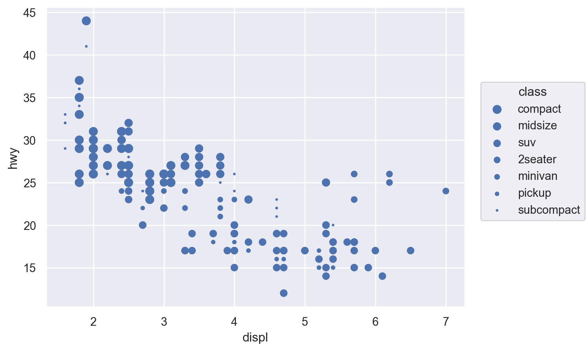
Marker
(
so.Plot(mpg, x="displ", y="hwy", marker="class")
.add(so.Dot())
)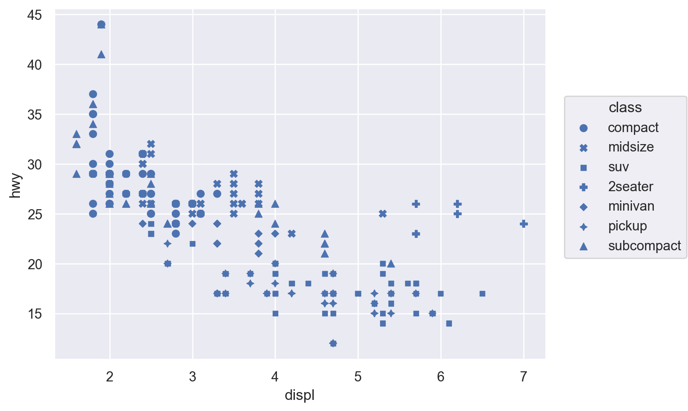
Alpha
(
so.Plot(mpg, x="displ", y="hwy", alpha="class")
.add(so.Dot())
)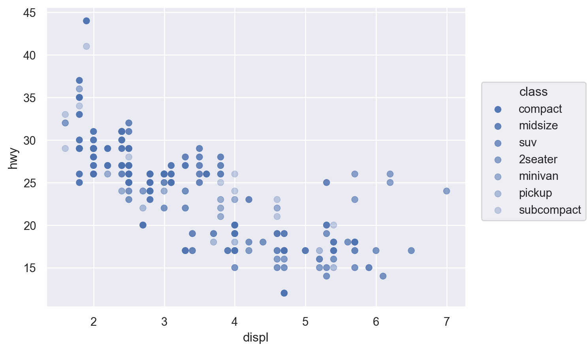
Linestyle
healthexp = sns.load_dataset("healthexp")
p = so.Plot(healthexp, x="Spending_USD", y="Life_Expectancy", linestyle="Country")
p.add(so.Line())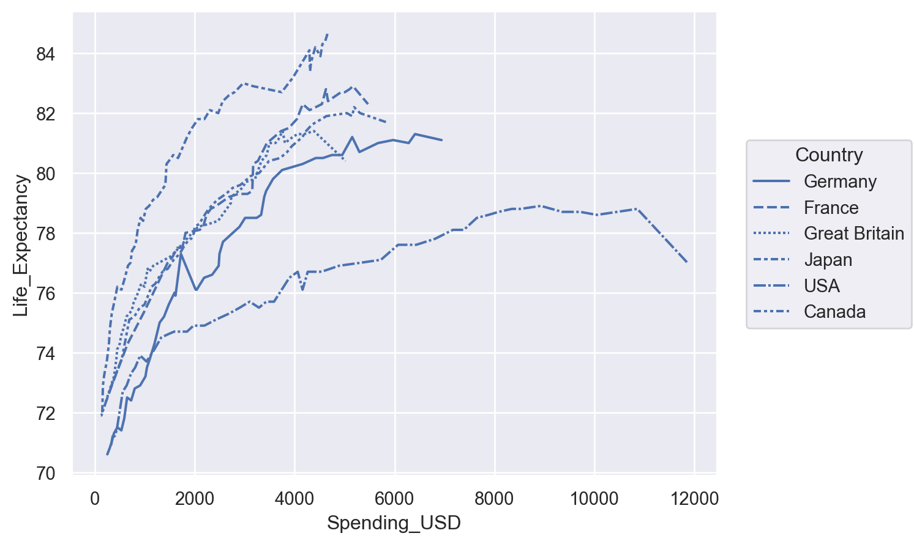
두 가지 이상의 속성
ex. color & marker
(
so.Plot(mpg, x="displ", y="hwy", color="class", marker="drv")
.add(so.Dot())
)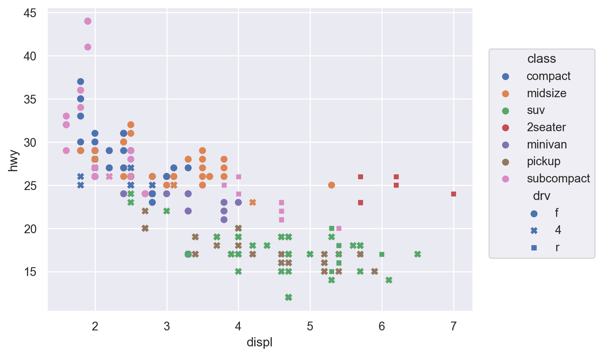
Important
어떤 속성을 어떤 변수에 할당하는 것이 적절한지를 선택하는 것이 기술
연속 vs. 명목(카테고리) 변수 여부에 따라 다르게 작동
::: {.cell 0=‘l’ 1=‘a’ 2=‘y’ 3=‘o’ 4=‘u’ 5=‘t’ 6=‘-’ 7=‘n’ 8=‘c’ 9=‘o’ 10=‘l’ 11=‘:’ 12=‘2’ execution_count=13}
p1 = so.Plot(mpg, x="displ", y="hwy", color="class").add(so.Dot())
p2 = so.Plot(mpg, x="displ", y="hwy", color="cty").add(so.Dot())
:::
Overploting
Adding multiple layers

여타 속성(properties) 부여
Setting properties vs. Mapping properties
mpg2 = sns.load_dataset("mpg")
(
so.Plot(mpg2, x="weight")
.pair(y=["horsepower", "acceleration"])
.facet(col="origin")
.add(so.Dots())
)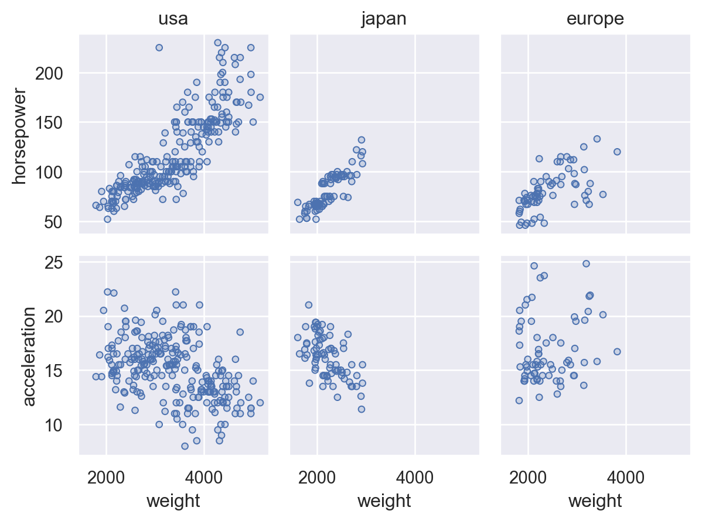
Customizing
Customizing limits, labels, and titles Plot has a number of methods for simple customization, including Plot.label(), Plot.limit(), and Plot.share():
penguins = sns.load_dataset("penguins")
(
so.Plot(penguins, x="body_mass_g", y="species", color="island")
.facet(col="sex")
.add(so.Dot(), so.Jitter(.5))
.share(x=False)
.limit(y=(2.5, -.5))
.label(
x="Body mass (g)", y="",
color=str.capitalize,
title="{} penguins".format,
)
)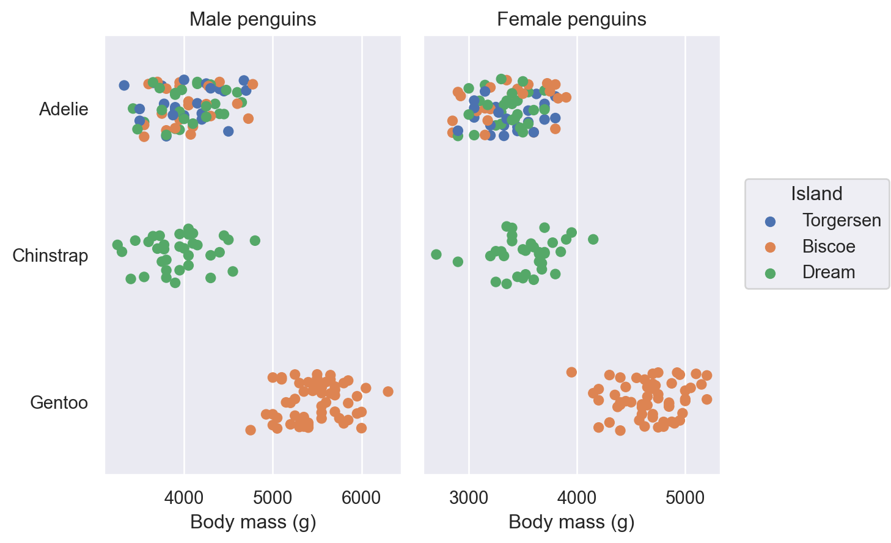
p.save("filename.png")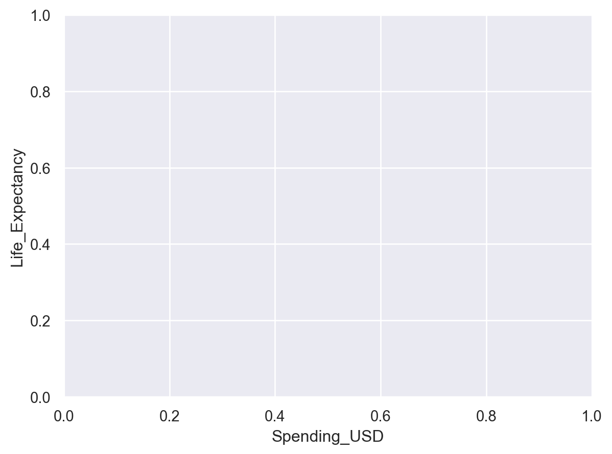